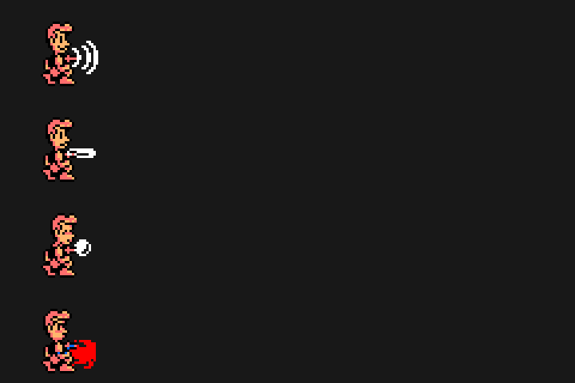
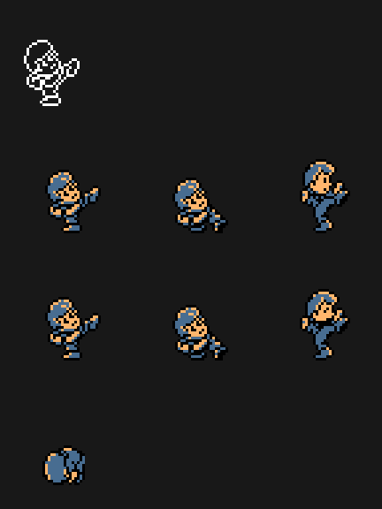
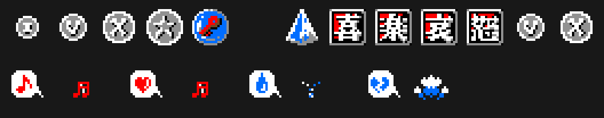

Todo lo de esta página está leído en el código; nada se ha visto todavía en el emulador.
Cada protagonista tiene cuatro estados: feliz, tranquilo, triste y enfadado (p06:A644). Wit feliz da un segundo salto en el aire, una vez por salto (p01:64F1); Cles feliz sigue andando sobre el vacío 32 cuadros mientras no suelte la dirección (p01:62C7).
El disparo de Wit es el tipo 4 menos el estado: ondas, barra, bola o rayo (p01:6B0D); el golpe de Cles, el estado más 6 (p09:B7C9). Cles enfadado pega fuerte y rompe la caja grande (p01:7398, p01:7431). Feliz no empuja bloques; los otros tres estados, cada uno a su velocidad (p01:7BD0).


Cada uno pone su estado de ánimo (p01:75EE), y cada ruina fija el de salida (p00:4575).

En INFORMATION se compran SPD y JMP con monedas (p06:A0EA). Los precios dependen del personaje: Wit 70 y 60, Cles 50 y 80 (p06:BF6C).
El juego busca en las demás ranuras cuatro números de catálogo (p06:B751):
| Cartucho | Lo que da |
|---|---|
| RC-749 (The Maze of Galious) | se empieza con 100 monedas (p00:45F7) |
| RC-750 (Metal Gear) | el daño a la mitad (p01:72FF) |
| RC-751 (Nemesis 2) | F5 CONTINUE tras GAME OVER (p00:4427) |
| RC-752 (F1 Spirit) | lo de estar feliz, siempre (p01:64F1, p01:62C7) |
Un MSX japonés da los textos en japonés; cualquier otro, en inglés (0x002B, p05:9849). La fuente lleva hiragana y 28 kanji (p14:9289).
Al llegar a las ruinas 1-4, un mapa hace parpadear la ruina y escribe a máquina su clave: JUBA RUINS, HARAPPA RUINS, GANDHARA RUINS o MOHENJO DARO (p06:A2BB). En el título, CTRL o el botón B piden la clave (KEYWORD, p00:4643), y con ella se empieza en esa ruina (p00:45CB).
La de cada ruina suena más alta o más baja, y con otro instrumento, según el ánimo del que entra (p15:BE7A, p13:625D): feliz, dos semitonos más alta; tranquilo, como está escrita; triste y enfadado, uno o dos más baja. Se oye en La música.
Al volver a poner la música con F5 se lee otra tabla (p15:BE75), y en la ruina 1 suena otra segunda voz (0x85).